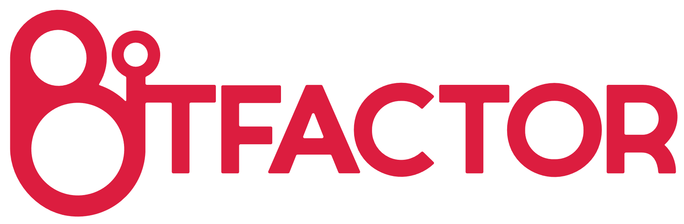
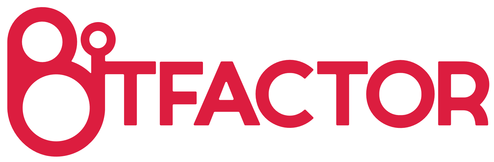

Työelämä- ja rekrytointitapahtuma Kumpulan kampuksella 8. marraskuuta yhdessä kaikkien kampuksen oppiaineiden opiskelijajärjestöjen kanssa.

Työelämä- ja rekrytointitapahtuma Kumpulan kampuksella 8. marraskuuta yhdessä kaikkien kampuksen oppiaineiden opiskelijajärjestöjen kanssa.

 



| Mitä? | Yrityksien esittelypisteitä |
Luentoja & Workshopeja |
|
Rekry Speed Dating |
| Ketä? | Fyysikoita |
Geofyysikoita |
|
Geologeja |
|
Kemistejä |
|
Kognitiotieteilijöitä |
|
Maantieteilijöitä |
|
Matemaatikoita |
|
Meteorologeja |
|
Tietojenkäsittelytieteilijöitä |
|
Tilastotieteilijöitä |
|
Tähtitieteilijöitä |
| Missä? |
Helsingin Yliopisto
Kumpulan kampus Gustaf Hällströmin katu 2 B 00550 Helsinki |
| Milloin? |
8.11.2017
klo 9-18 |
| Joko? |
Vielä
pvää!
|
| Jatkot? | Tottakai! |
Opiskelijoidemme joukosta löytyy suuri määrä potentiaalia erilaisiin työtehtäviin. Alla on esitelty lähes kaikki mukana olevat opiskelualamme.
Utelias, sisukas ja monitaitoinen ovat kolme asiaa jotka kuvaavat hyvin Helsingin yliopiston fyysikoita. Fyysikoiksi opiskelemaan tulleet ovat mitä uteliaimpia ja itsenäisiä tiedonhakijoita, ketkä valmistuessaan omaavat vahvat matemaattiset- ja ongelmanratkaisutaidot. Meillä Helsingissä on vahva fyysikkoyhteisö sekä monialainen kampus, joiden avulla opiskelijamme ovat sisäistäneet monia hyödyllisiä taitoja, aina ohjelmoinnista suorastaan timanttisiin yhteistyötaitoihin, sillä harva meistä suoriutuu opinnoissaan aivan yksin.
Erikoisosaamista Kumpulan fyysikoilla on aina ilmakehätieteistä laskennalliseen datatieteeseen, materiaalitutkimukseen sekä moneen muuhun. Valmistuneiden fyysikoiden osaaminen on usein sitäkin laajempaa. Moderni maailma ei pyörisi ilman vahvaa ymmärrystä fysikaalisista ilmiöistä, joita juuri Helsingin yliopiston fyysikot opiskelevat, tutkivat ja soveltavat päivä kerrallaan.
Geofyysikoilta löytyy laaja-alaista osaamista maapallomme tutkimiseen. Geofysiikka jakaantuu kahteen eri päähaaraan, kiinteän maan geofysiikkaan ja vesivaipan geofysiikkaan. Kiinteän maan geofyysikot pääsevät osaamisessaan pintaa syvemmälle, kun tutkimuskohteena ovat maanjäristykset, laattatektoniikka, kivien magnetismi ja geotermiikka. Tutkimuskohteet ovat hyvin samankaltaisia kuin geologialla, mutta tutkimusmenetelmissä ovat vahvasti läsnä fysiikan soveltaminen ja mallintaminen.
Vesivaipan geofyysikot keskittyvät nimensä mukaisesti maapallon vesiin. Vesivaipan geofyysikoilta löytyy erityisosaamista esimerkiksi maapallomme pintavesistä, merivesistä, pohjavesistä ja jäätiköistä. Käytännössä erikoistua asiantuntijaksi mistä tahansa osa-alueesta, mistä vettä löytää. Myös vesivaipan geofysiikassa vesien fysikaaliset ominaisuudet ovat tärkeimmässä asemassa. Mallintaminen on vahvasti läsnä muun muassa tutkiessa virtauksia, merien aallokkoa ja jäätiköiden muutoksia. Vesivaipan geofysiikan tutkimukset ovat hyvin oleellinen osa ilmastonmuutostutkimuksissa.
Kaikkia geofyysikoita yhdistää siis maapallon toiminnan ymmärtäminen fysikaalisin keinoin. Tärkeimmät osaamisalueet ovat ilmiöiden mallintaminen, sekä kentällä tehtävät mittaukset. Kenttätöissä geofyysikot ovat erinomaisia, sillä he osaavat valmistautua tekemään laadukkaita mittauksia jopa äärimmäisissä olosuhteissa.
Geologia tutkii maan kuoren prosesseja ja planeettamme kehitystä, joten geologien keskuudesta löytyy osaamista paitsi mineraali- ja pohjavesivarantojen hyödyntämiseen, myös ympäristökysymysten ratkaisuun ja ilmastonmuutoksen tutkimukseen. Geologian kandidaatinopinnot tarjoavat opiskelijoille kuvan planeetan kuoren prosesseista ja geologisten luonnonvarojen hyödyntämisestä ja kartoittamisesta kentällä. Ulkoilmassa viihtyvät geologit soveltuvatkin kandivaiheessa erinonomaisesti esimerkiksi kallio- tai maaperäkartoituksiin tai geofysikaalisiin mittaustöihin. Sivuaineinaan geologit opiskelevat kemiaa, matematiikkaa, fysiikkaa ja menetelmätieteitä. Geologian kandivaiheeseen kuuluu myös GIS-opintoja, joten geologit osaavat myös laatia karttoja ja suoriutuvat laboratoriotöistä.
Myöhemmissä opinnoissaan geologit erikoistuvat taloudelliseen- ja kallioperägeologiaan, hydro- ja ympäristögeologiaan, kiinteän maan geofysiikkaan tai paleobiologiaan ja paleoklimatologiaan. Maisterivaiheen opiskelijat osaavat jo toimia itsenäisesti laboratoriossa ja kentällä.
Kemisteillä täytyy olla paljon käytännön osaamista sekä teoreettista tietoa. Näiden taitojen saavuttamiseksi kemialla aloitetaan heti syventämään taitoja teoriasta, ja kun vahva pohja on saavutettu, aloitetaan laboratoriotyöskentely, joka on olennainen osa jokaisen kemistin tutkintoa. Siksi jo ensimmäisen vuoden jälkeen kemianopiskelija osaa toimia turvallisesti laboratoriossa, sekä oppii helposti käyttämään erilaisia laitteita.
Toisen vuoden jälkeen kemian opiskelijat osaavat toimia itsenäisesti laboratoriossa ja omaavat jo mahdollisesti poikkitieteellisiä taitoja. Kemisteillä sivuaineet ovatkin jakautuneet laajasti, esimerkkeinä tilastotiede, tietojenkäsittely, fysiikka, farmasia, biologia ja paljon muita aloja.
Maisterivaiheen opinnoissa kemisti erikoistuu johonkin kemian osa-alueeseen, joita on myös useita vaihtoehtoja, kuten molekyylitiede, materiaalitutkimus, radiokemia ja laskennallinen kemia. Tämän vaiheen opiskelija osaa jo toimia omalla alallaan varsin kattavasti.
Kognitiotiede tutkii tietoilmiöitä, kuten havaitsemista, oppimista, muistia, kieltä, ajattelua ja ongelmanratkaisua. Kognitiotieteen opiskelijoilta löytyy varsin monipuolista osaamista aina käytettävyyskonsultoinnista tekoälytutkimukseen, filosofiasta aivotutkimukseen ja tietojenkäsittelytieteestä kielitieteisiin. Kognitiotieteilijöillä on alan monipuolisuuden ansiosta vankka poikkitieteellinen osaaminen ja kyky toimia yhdistävänä linkkinä eri tieteenalojen välillä työpaikoilla ja tutkimusryhmissä. Alan opiskelijoilla on hallussaan laaja kokonaisuus metodiopintoja muun muassa logiikasta, tilastotieteestä ja tietojenkäsittelytieteestä. Tämän lisäksi psykologia ja tutkimuspainotteisuus ovat tärkeä osa kognitiotieteen opintoja. Kognitiotieteilijöiden vahvuus onkin metodien hallinta yhdistettynä ihmismielen ja ihmisen tiedonprosessoinnin ymmärtämiseen.
Maantieteilijöiden ehdoton valtti on kyky hahmottaa maailmaa ja sen ilmiöitä kokonaisuuksina, syy-seuraussuhteiden kautta. Kartografian ja geoinformatiikan menetelmiin perehdytään jo fuksivuonna, myöhempinä vuosina hankitaan tietämystä omasta erikoistumisalasta, kuten alue- ja kaupunkisuunnittelusta, kulttuuri- tai luonnonmaantieteestä tai geoinformatiikasta. Maantieteen opinnot valmistavat laatimaan erilaisia raportteja ja selvityksiä sekä organisoimaan käytännön projekteja erilaisten kenttä- ja projektikurssien myötä.
Tilastojen ja alueellisen tiedon visuaalinen esittäminen sekä silmää hivelevien karttojen tuottaminen kuuluvat keskeisimpinä taitopalettiimme. Maantieteen menetelmäopinnot ovat ainutlaatuisen laajat, ja geoinformatiikan lisäksi hallussamme ovat niin kvantitatiiviset kuin kvalitatiiviset menetelmät. Lisäksi yhä useampi maantieteilijä hallitsee ohjelmoinnin, ja menetelmäopintoja tullaan painottamaan tulevaisuudessa entistäkin enemmän. Sivuainevalikoima on laaja ja erittäin vapaa, mikä johtaa opiskelijoiden yksilöllisiin aineyhdistelmiin ja korkeaan motivaatioon. Maantieteilijät opiskelevat sivuaineenaan muun muassa yhteiskuntatieteitä, tietojenkäsittelytiedettä, tilastotieteitä, yhdyskuntasuunnittelua tai biologiaa.
Työelämässä eri aloille erikoistuneet maantieteilijät luovat eri näkökulmia omaavien todellisten moniosaajien verkoston, jonka keskellä samalla aallonpituudella elävät osaajat voivat vaivattomasti tehdä yhteistyötä ja jakaa tietämystään.
Matematiikan opiskelijamme aloittavat opintonsa irtaantumalla lukiomatematiikasta todistusten, uusien määritelmien ja rytmikkään laskemisen avulla. Jo ensimmäisen vuoden jälkeen matematiikan opiskelijalla on kova taso matematiikasta ja perustiedot eri matematiikan osa-alueilta. Toisen ja kolmannen vuoden opiskelijoilla löytyy jo poikkitieteellistä osaamista, kuten koodaustaitoja, fysikaalista tietämystä tai mitä ikinä opiskelija on päättänytkään opiskella toisena tai kolmantena aineenaan. Matemaattinen ajattelukyky on matemaatikon mukana arkipäivän haasteissa loogisena ja järjestelmällisenä työskentelytapana ja ratkaisukykynä.
Erikoistuminen matematiikan alueisiin aloitetaan kolmannen ja neljännen vuoden aikana. Siinä vaiheessa meistä kuoriutuu kivenkovia analyytikkoja, loogikkoja ja muita matemaattisten alojen osaajia. Muiden luonnontieteiden opinnot muokkaavat matemaatikoista nykymaailmaan alan kuumia osaajia niin it-alalla kuin perinteisimmilläkin aloilla.
Yleisimmät toiset opiskeltavat aineet matemaatikkojen keskuudessa ovat tietojenkäsittelytiede, tilastotiede, fysiikka ja taloustiede.
Meteorologian opiskelijat ovat ilmakehätieteiden moniosaajia, joiden tietotaito ulottuu aina yksittäisten hiukkasten kokoluokasta maapalloa halkoviin planetaariisiin aaltoihin. Ensimmäisinä opiskeluvuosinaan tulevat meteorologit hankkivat vahvan fysikaalisen ja laskennallisen pohjan tulevia opintojaan varten ja näihin lukeutuu esimerkiksi ohjelmointitaitojen oppiminen. Jokainen nykyajan meteorologian opiskelija osaa vähintäänkin ohjelmoinnin perusteet jollain ohjelmointikielellä ja suurin osa oppii hallitsemaan useampaa ohjelmointikieltä. Erityisesti MATLAB, Python ja Fortran tulevat monille meteorologille opintojen edetessä tutuksi.
Nykyään meteorologian opiskelijoilla on kandidaateiksi valmistuessaan vahvat perustiedot koko oppiaineen skaalalta, jonka jälkeen he valitsevat maisterivaiheessa joko dynaamisen meteorologian (eli suuremman skaalan meteorologian) tai mikrometeorologian opintosuunnan. Tulevaisuudessa tutkintouudistuksen myötä meteorologiaan erikoistuminen siirtyy pääasiassa maisterivaiheeseen, jossa tulemme kuulumaan ilmakehätieteiden maisteriohjelman alle. Tämän seurauksena kandidaattivaiheessa tulevat meteorologit saavat entistä monipuolisemman fysikaalisen ja laskennallisen pohjan.
Opintojensa seurauksena meteorologit ovat asiantuntijoita esimerkiksi ilmastonmuutoksen tutkimuksessa ja he ymmärtävät erinomaisesti monimutkaisia syy-seuraussuhteita, joita tämän alan tutkimukseen kuuluu. Meteorologien ymmärrystä ilmakehän sielunelämästä yhdistettynä tietotekniseen osaamiseen voikin hyödyntää monipuolisesti niin data-analyysiä vaativissa tehtävissä kuin energia-alalla.
Tietojenkäsittelytieteen opinnot lähtevät ohjelmoinnin perusteista mutta monipuolistuvat nopeasti ja mahdollisuuksia osaamisen syventämiseen löytyy niin ohjelmistosuunnittelun, algoritmiikkan, data-analytiikan, koneoppimisen, hajautettujen järjestelmien, koneoppimisen kuin big datankin tiimoilta.
Tilastotiede voisi nimeltään olla myös satunnaisuustiede, sillä tilastotieteilijä kannattaa kutsua paikalle aina, kun jossain ilmenee satunnaisuutta.
Tilastotieteilijä on erikoistunut tekemään päätelmiä epävarmuuden vallitessa. Koska epävarmuutta ilmenee lähes kaikkialla maailmassa, ovat tilastotieteilijöiden taidot kysyttyjä työelämässä alalla kuin alalla.
Helsingin yliopistossa opimme käsittelemään sattumaa vahvan matemaattisella taustalla. Me tilastotieteilijät osaamme viedä teoreettisen osaamisensa käytännön maailmaan samalla ymmärtäen malliensa vaatimat oletukset, minkä vuoksi kykenemme kuvaamaan monenlaisia ilmiöitä tehokkaasti.
Tilastotieteilijät ovat erityisesti R-ohjelmointikielen osaajia. Ohjelmointi on ylipäätään keskeisessä roolissa tilastollisten menetelmien soveltamissa. Tilastotieteilijät ovatkin usein myös tietojenkäsittelyn sivuaineopiskelijoita ja osaajia.
Tähtitieteilijät ovat fysiikaalisista tieteistä tulevia moniosaajia, sillä aiheita ilmakehän ulkopuolella on vaikka muille jakaa. Yleensä ensimmäisenä vuonna tähtitieteilijät opiskelevat fysiikan peruskursseja ja niiden lomassa muutamia kursseja tähtitieteen perusasioita, kunnes toisen ja kolmannen vuoden aikana me pääsemme syventymään oman alamme monimuotoisiin suuntiin. Iso osa tähtitieteilijöistä opiskelee tähtitieteen ja muun fysiikan sivussa myös ohjelmoimaan, sekä työskentelemään tilastojen kanssa. Ennen maisterivaihetta teemme fysikaalisen tieteen kandin, mutta opintomme sisältää hyvinkin paljon tähtitieteen kursseja.
Nykyisten tutkintouudistuksen jälkeen jaamme maisterilinjamme kosmologien ja hiukkasfyysikoiden kanssa alojen samankailtaisuuksien vuoksi, mutta olemme pitkälti erikoistuneet kuitenkin omaan alaamme.
Kuten muutkin kumpulan opiskelijat, mekin omaamme pitkälle kehittyneet ongelmanratkaisutaidot, sekä kyvyn opiskella nopeasti uusia ja hyvinkin teoreettisia asioita. Monella tähtitieteilijällä on hyvät ja käytännönläheiset matematiikan taidot, sekä ohjelmointitaustaa monenlaisista erilaisista ohjelmointikielistä.
Tavoitat meidät sähköpostilla osoitteesta
info@potentiaali.com